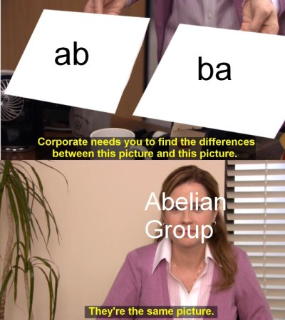

Notes consist of Sets, Subsets, Operations, Group, Abelian Group, Subgroups, and Homework 1 and 2 questions.

1. Set
A set is an un-ordered collection on objects.
Examples
\(\mathbb{N}=\{1,2,3,...\}\) : they exist naturally
\(\mathbb{Z}=\{...,-3,-2,-1,0,1,2,3,...\}\) : includes zero and negatives
\(\mathbb{Q}=\{\frac{m}{n}|m,n\in \mathbb{Z}\text{ and }n\ne 0\}\) : integer fractions
\(\mathbb{R}\) : includes square roots and pie, real analysis starts with \(\sqrt{2}\)
\(\mathbb{C}\) : includes imaginary numbers
Asterisk in the superscript means delete zero
Plus sign in the superscript means only positive values (>0)
2. Subset
A set B is a subset of A, \(B\subseteq A\) if every element of B is an element of A.
3. Operations
An operation \(*\) on a set A is a rule which assigns to each ordered pair (a,b) of elements A exactly one element \(a*b\) of A.
Properties
*is commutative if \(a\ne b\), \(a*b=b*a\) \(\forall\) a,b \(\in A\).+and \(\cdot\) are commutative-, \(\div\) , funtion composition and matrix multiplication are not commutative
*is associative if \((a*b)*c=a*(b*c)\) \(\forall\) a,b,c, \(\in A\).- addition is associative, subtraction is not associative
If \(\exists\) \(e\in A\) \(\Rightarrow\) \(e*a=a*e=a\) \(\forall\) \(a\in A\), the we call e the identity element in A w.r.t.
*.0=e w.r.t. addition
1=e w.r.t. multiplication
If \(e\in A\) is the identity w.r.t.
*and \(a,b\in A\Rightarrow\) \(a*b=b*a=e\) we call a and b inverses of one another.the inverse of \(a\in \mathbb{R}\) w.r.t. addition is -a since \(a+(-a)=(-a)+a=0\)
the inverse of \(a\in\mathbb{R}^*\) w.r.t. multiplication is \(\frac{1}{a}\) since \(a(\frac{1}{a})=(\frac{1}{a})a=1\)
Proof Outlines
Commutative:
\(\underline{\text{No}}\): Give an example, “Let a = 1, and b =2”, and then show \(a*b\ne b*a\).
\(\underline{\text{Yes}}\): “For any a,b in the set” and then show \(a*b=b*a\).
Associative
\(\underline{\text{No}}\): Give an example, “Let a=1, b=2, c=3” and then show \(a*(b*c)\ne (a*b)*c\).
\(\underline{\text{Yes}}\): “For any a,b,c in the set” and then show \(a*(b*c)=(a*b)*c\).
Identity
\(\underline{\text{No}}\): Suppose that \(e\in\) the given set \(\Rightarrow\) \(a*e=a\) \(\forall a\in\) the given set. Then show \(a*e=a\) by plugging e in for b and solving for e. “Since the identity element must be a constant then there is no identiy w.r.t.” the given set. (can’t involve variables)
\(\underline{\text{Yes}}\): State what the identity element is w.r.t. the orperation and show that \(a*e=a\) and \(e*a=a\).
Inverses
\(\underline{\text{No}}\): Given an example of an element who doesn’t have an inverse.
Note: If there is not identity element then there is no inverse.
\(\underline{\text{Yes}}\): “Suppose b=\(a^{-1}\). Then \(a*b=e\)” (where e is the identity found in 3), and then try to solve the eqation for b. Then check \(b*a=e\) as well.
Note: Do not need to check \(b*a=e\) if we know
*is commutative.
4. Group
Let G be a set and * be an operation on G. Suppose
*is associative\(\exists\) \(e\in G\)
\(\forall\) \(a\in G\Rightarrow a^{-1}\in G\).
- for finite groups \(|G|<\infty\)
5. Abelian Group
A group that is also commutative.
- If G is abelian, then \((ab)^n=a^nb^n\) for all \(n\in \mathbb{N}\).
6. Proposition and Theorems for Groups
Proposition 1
Let G be a group, then G has exactly one identity element.
Proposition 2
Every element of G has exactly one inverse.
Theorem 1 (Cancellation Law)
Let G be a group and let \(a,b,c\in G\), then \(ab=ac\Rightarrow b=c\) and \(ba=ca\Rightarrow b=c\).
Theorem 2
Let G be a group and let \(a,b\in G\). If \(ab=e\), then a and b are inverses, i.e. \(a=b^{-1}\) and \(b=a^{-1}\).
Theorem 3
Let G be a group and let \(a,b\in G\) then \((ab)^{-1}=b^{-1}a^{-1}\) and \((a^{-1})^{-1}=a\).
- to show a and b are inverses, show their product is e.
Klein 4 Group
(for fintie groups) : \(a^2=b^2=c^2=e\)
7. Homework 1 Questions
b)Do the following operations define a given set: \(a*b=3^b\) on \(\mathbb{Q}\)?
No, this does not define an operation on \(\mathbb{Q}\) because \(a*b\) is not always in \(\mathbb{Q}\). For example, let \(a=1\) and \(b=\frac{1}{2}\). Then \(a*b=1*\frac{1}{2}=3^{\frac{1}{2}}=\sqrt{3}\not\in\mathbb{Q}\).
- Suppose a,b and x are elements of a non-abelian group G, and that we want to solve the equation ax=b for x. Why would it be incorrect and unclear to say that the solution is \(x=\frac{b}{a}\)?
When we write \(x=\frac{b}{a}\) it is unclear if we mean \(x=a^{-1}b\) or \(x=ba^{-1}\). Since G is a non-abelian group, \(a^{-1}b\) and \(ba^{-1\) are not necessarily equal. The correct answer to \(ax=b\) is \(x=a^{-1}b\).
8. Subgroups
Let G be a group. A subset \(H\subseteq G\) is called a subgroup if:
\(e\in H\) (same e as G)
\(\forall\) a,b \(\in H\) \(ab\in H\). (we say H is closed under the operation)
\(\forall\) \(a\in H\) , \(a^{-1}\in H\). (we say H is closed under inverses)
Example
Addition:
\(0\in H\).
\(\forall\) a,b \(\in H\) \(a+b=H\).
\(\forall\) \(a\in H\) , \(-a\in H\).
Proof Outlines (Two-Step Subgroup Test)
\(e\in H\)
for all a,b \(\in H\), \(ab^{-1}\in H\).
Prove something is a subgroup of G.
“Suppose” then show e is 0 or 1 for the subgroup in a short series of equalities, “the additive or multiplicative element 0 or 1 is in” the subgroup.
“Now take any a,b \(\in\) the subgroup.” Then define a and b potentially for some other integers. Then show \(ab^{-1}=\) something identifiable in the subgroup.
“Therefore we’ve shown that” our subgroup “contains the identity element and for all a,b \(\in H\) , \(ab^{-1}\in\)” our subgroup. Thus our subgroup is a subgroup of G.
Example
Addition:
\(0\in H\).
for all \(a,b\in H\), \(a+(-b)=a-b\in H\).
Added Notes
If G is abelian, then \((ab)^n=a^nb^n\) for all \(n\in \mathbb{N}\).
In any group \((a^{-1})^n=(a^n)^{-1}\) for all \(n\in \mathbb{N}\).
In any group \(e^{-1}=e\).
Two-step subgroup test
Let G be a group. A subset H \(\subseteq G\) is a subgroup of G if
- \(e\in H\)
- addition: show 0 \(\in H\)
- \(\forall a,b,\in H\), \(ab^{-1}\in H\).
- addition: \(\forall\) a,b \(\in H\), \(a+(-b)=a-b\in H\)
8. Homework 2 Questions
- Prove H is a subgroup of G for: \(H=\{3^m4^n|m,n\in\mathbb{Z}\}\), \(G=\mathbb{R}^*\)
Since \(1=3^04^0\), the multiplicative identity element 1 is in H.
Now take any a,b \(\in H\). Then \(a=3^{m_1}4^{n_1}\) and \(b=3^{m_2}4^{n_2}\) for some \(m_1, m_2, n_1, n_2 \in \mathbb{Z}\). So,
\(ab^{-1} = 3^{m_1}4^{n_1}(3^{m_2}4^{n_2})^{-1}\)
\(\quad\quad= 3^{m_1}4^{n_1}\cdot \frac{1}{3^{m_2}4^{n_2}}\)
\(\quad\quad= \frac{3^{m_1}}{3^{m_2}}\cdot\frac{4^n_1}{4^n_2}\quad\quad\quad\quad\text{, since multiplication is commutative}\)
\(\quad\quad= 3^{m_1-m_2}4^{n_1-n_2}\)
Since \(\mathbb{Z}\) is closed under subtraction, \(m_1-m_2\) and \(n_1-n_2\) are in \(\mathbb{Z}\). Therefore,
\[ab^{-1}=3^{m_1-m_2}4^{n_1-n_2}\in H\]
We’ve shown that H contains the identity element and for all a,b \(\in H\), \(ab^{-1}\in H\). Thus, H is a subgroup of \(\mathbb{R}^*\). \(\quad\quad\square\)
- Let H be a subgroup of group G and let \(a\in G\) be a constant. Show that \(K=\{aha^{-1}|h\in H\}\) is also a subgroup of G.
Since H is a subgroup of G, the idnetity element e is in H. Hence, \(aea^{-1}\in K\).
Since, \(aea^{-1}=aa^{-1}=e\), this implies that \(e\in K\).
Now take any elements \(ah_1a^{-1}\) and \(ah_2a^{-1}\) in K. Then \(h_1\), \(h_2\) \(\in H\) and
\(ah_1a^{-1}(ah_2a^{-1})^{-1}=ah_1a^{-1}(a^{-1})^{-1}h_2^{-1}a^{-1}\quad\quad\quad\text{, by T. 3(i) form Ch. 4}\)
\(\quad\quad\quad\quad\quad\quad\quad\quad=ah_1a^{-1}ah_2^{-1}a^{-1}\quad\quad\quad\quad\quad\text{ , by T.3(ii) from Ch. 4}\)
\(\quad\quad\quad\quad\quad\quad\quad\quad=ah_1h_2^{-1}a^{-1}\quad\quad\quad\quad\quad\quad\quad\text{, since }a^{-1}a=e\)
Since H is a subgroup of G and \(h_1\), \(h_2\) \(\in H\), the element \(h_1h_2^{-1}\) is in H. Hence
\[ah_1a^{-1}(ah_2a^{-1})^{-1}=ah_1h_2^{-1}a^{-1}\in K\]